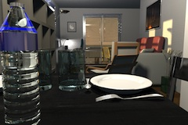

Ai due migliori livelli di qualità, l'immagine prodotta dipende dalla posizione
e dalla potenza delle luci. In modo predefinito, l'immagine viene calcolata a mezzogiorno
con luci aggiuntive posizionate automaticamente sul soffitto di ogni stanza.
Se vuoi controllare meglio le sorgenti luminose della tua casa, deseleziona la casella Aggiungi plafoniere,
aggiungi alcuni oggetti della categoria Luci nel piano e regola la loro potenza con
l'indicatore di alimentazione o modificando i
loro attributi. La potenza del sole, il colore e la direzione
dei suoi raggi dipendono dall'ora del giorno e dalla data selezionata, ma
anche dalla direzione del nord, dalla posizione geografica e dal fuso orario,
questi ultimi parametri sono gestiti dal pannello della bussola.
La luminosità globale dell'immagine dipende anche dal livello di
la luminosità della luce impostata nel pannello Modifica vista 3D.
Infine, il pannello Crea foto ti permette di scegliere anche tra i
4 diversi tipi di lenti seguenti.
|  |
|
 |
Predefinite
|
Profondità di campo |
 |
|
|
| Grandangolo |
Sferiche |
Se vuoi calcolare un gruppo di foto nella stessa sequenza, memorizza i punti di vista
che ti interessano con la voce di menu Vista 3D > Memorizza punto di vista... quindi
seleziona la voce di menu Vista 3D > Crea foto dai punti di vista.... Sarà visualizzata
una finestra che ti consentirà di scegliere la dimensione, la qualità dell'immagine e il formato
del file delle immagini calcolate, prima di calcolarle e salvarle nella cartella di tua scelta.
Ai due migliori livelli di qualità, la data/ora e l'obiettivo utilizzati per un dato punto di vista
prodotto saranno gli ultimi valori che hai inserito nel pannello Crea foto nel momento in
cui hai memorizzato o modificato quel punto di vista. Se non hai mai aperto il pannello Crea foto
o non hai modificato la data/ora in quel pannello, la data/ora sarà mezzogiorno del giorno in cui
è stata creata la casa modificata.

|